class: center, middle, titlepage # DIVA and OceanBrowser Alexander Barth¹, Sylvain Watelet¹, Charles Troupin², Aida Alvera Azcarate¹, Giorgio Santinelli³, Gerrit Hendriksen³ and Jean-Marie Beckers¹ ¹GHER, University of Liège, Belgium ²SOCIB, Spain ³Deltares, Netherlands     --- # What is DIVA? * DIVA: Data Interpolating Variational Analysis * Objective: __derive a gridded climatology from in situ observations__ * The variational inverse methods aim to derive a continuous field which is: * __close to the observations__ (it should not necessarily pass through all observations because observations have errors) * "__smooth__" * DIVA works internally on a finite element mesh: * decouples basins based on __topography__ * can take __ocean currents__ into account * can detect __trends__ in your data * can detect and remove __outliers__ * consistent __error variance estimation__ --- # New features of DIVA ## 4.6.10 * For close measurements (space and time), the representativity errors can be adapted via a __weighting option__. Particularly suited for time series. * __Extraction of topography from GEBCO__ more robust and accurate. ## 4.6.11 (current) * Creation of very __large 4D netCDF files__ (> 2Go) * divacutNCDF: __cut the domain__ of your final NetCDF ## 4.7.1 (upcoming) * __Bottom analysis__: the distance is counted from the bottom ocean, derived from the interpolation of the topography. * __Variable correlation length__ depending on the gradient of the depth for bottom analyses * Conversion of __EMODnet bathymetry__ to Diva-readable format Full list at: http://modb.oce.ulg.ac.be/mediawiki/index.php/New_Diva_Features --- # Bottom analysis <div style="float:right; width: 250px" > 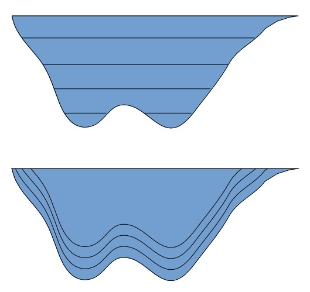 <br> Vertical layers <br> 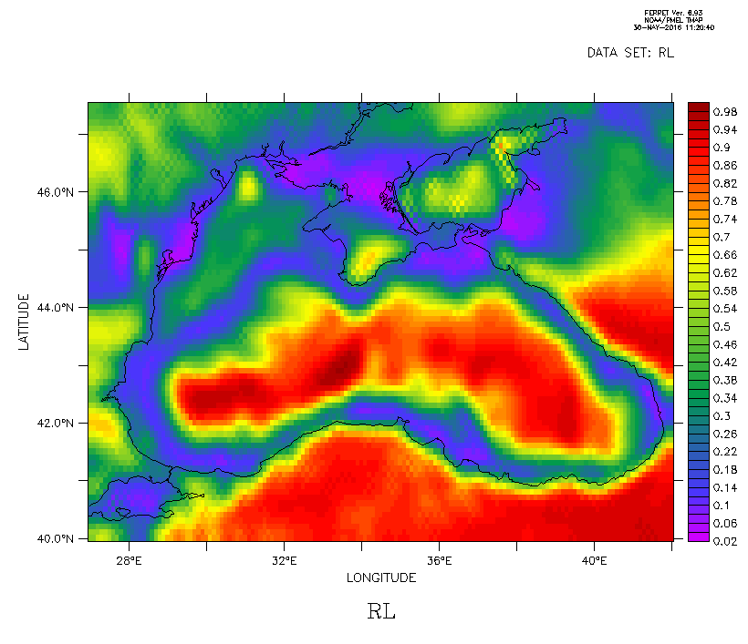 <br> Relative correlation length based on gradient </div> * Previously, the analyses were performed at several depths counted from the ocean surface * Result was then combined in a "deepest variable" field using for each grid point the deepest result available. * In the last DIVA version: computation of the layers from several user-defined distances from the bottom surface * Correlation length is adapted to avoid the extrapolation of the observation to areas with a different bottom depth * Advection constrain takes the orientation of the bathymetric slope into account --- # Bottom analysis 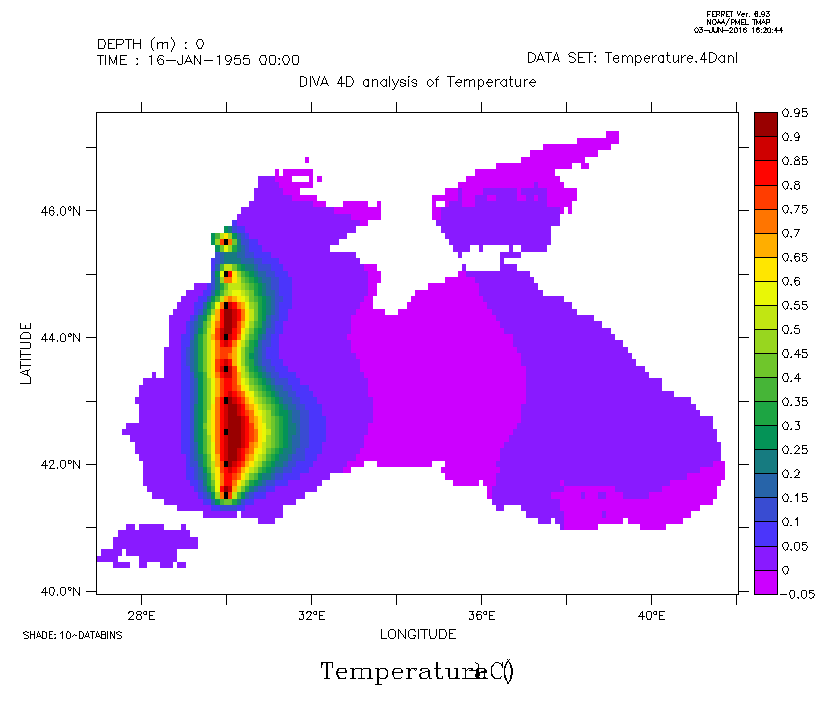 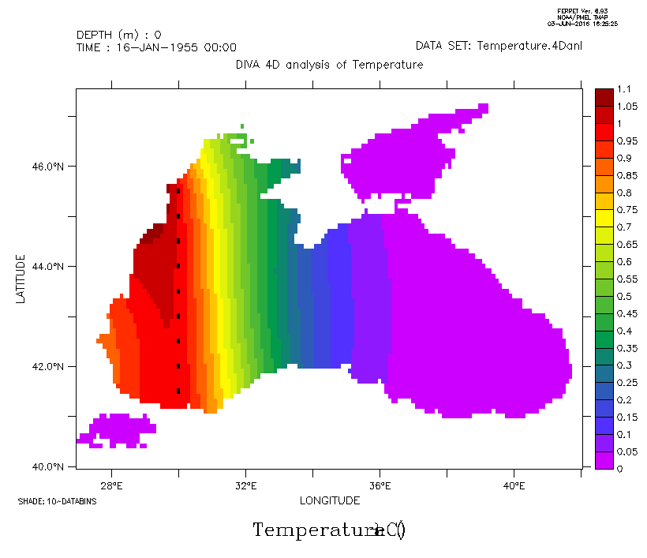 * Impact of spatially variable correlation length * Correlation length is reduced based on topography gradient (panel right) compared to a uniform correlation length (left panel) --- # Time series 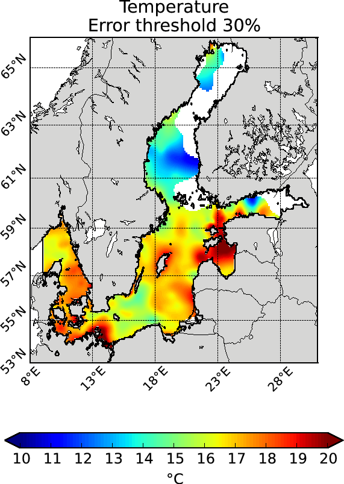 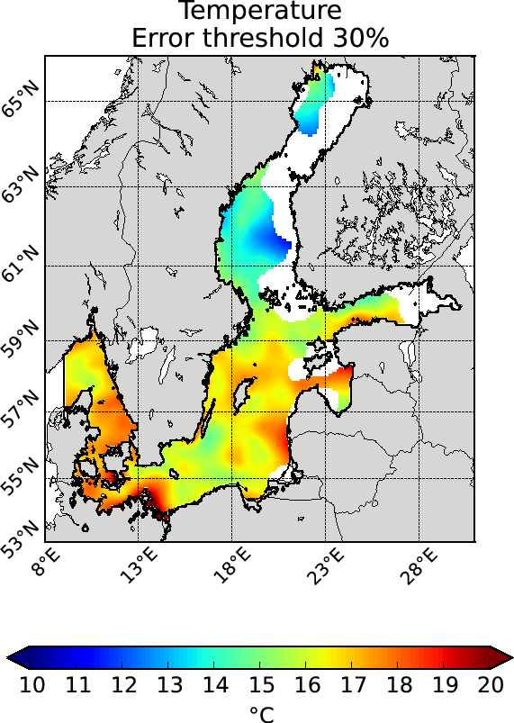 * The data weighting decrease the weight of close-by observations in the analysis. * Necessary for time series * Weight are based on space and time distance * SST analyses over the Baltic Sea without (left) and with (right) data weighting. * These analyses use in situ data over July 1900–2012 --- # divadoxml-gui 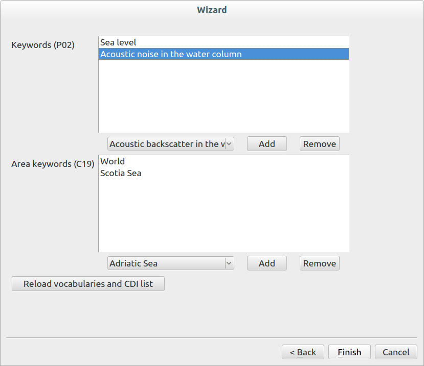 * Graphical tool to generate a XML description of DIVA products for Sextant. * Graphical user interface or command line tool. * Now includes also the list of data originators in the XML description. * Based on an inventory of all CDIs. * This CDI list can be updated from the application. --- # What is OceanBrowser? * Web-interface to __visualize gridded__ data sets in NetCDF * Horizontal and vertical sections * Scalar and vector fields * OceanBrowser is used in * __SeaDataNet__ * __EMODNET Chemistry__ * In those projects it is used to visualize gridded data sets generated by the tool DIVA (Data-Interpolating Variational Analysis) <div style="text-align: center; font-size: 1.5em"><a href="http://ec.oceanbrowser.net/emodnet/">http://ec.oceanbrowser.net/emodnet/</a></div> --- # Layer selection 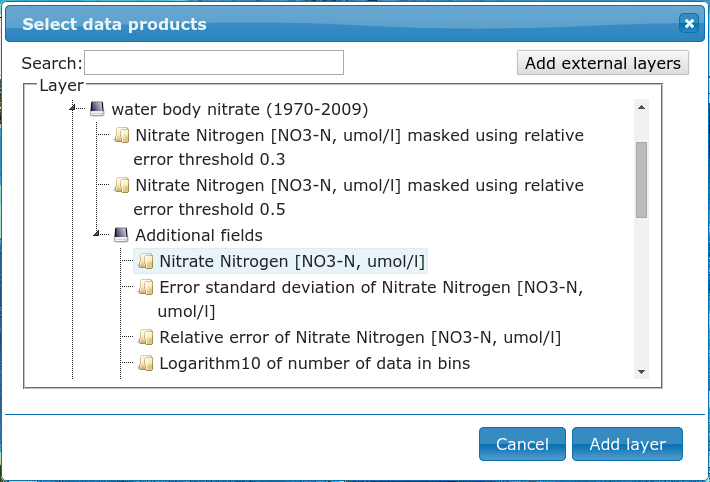 * Simple directory __structure on the server__ is mapped into a hierarchical list of layers * NetCDF files can be added on-the-fly (without a server restart) * __Virtual sub-folder__ can be added to show some NetCDF variables more/less prominently For DIVA field: * 1st level: analysis masked by an error threshold * 2nd level: full field available under “Additional fields” --- # Horizontal section 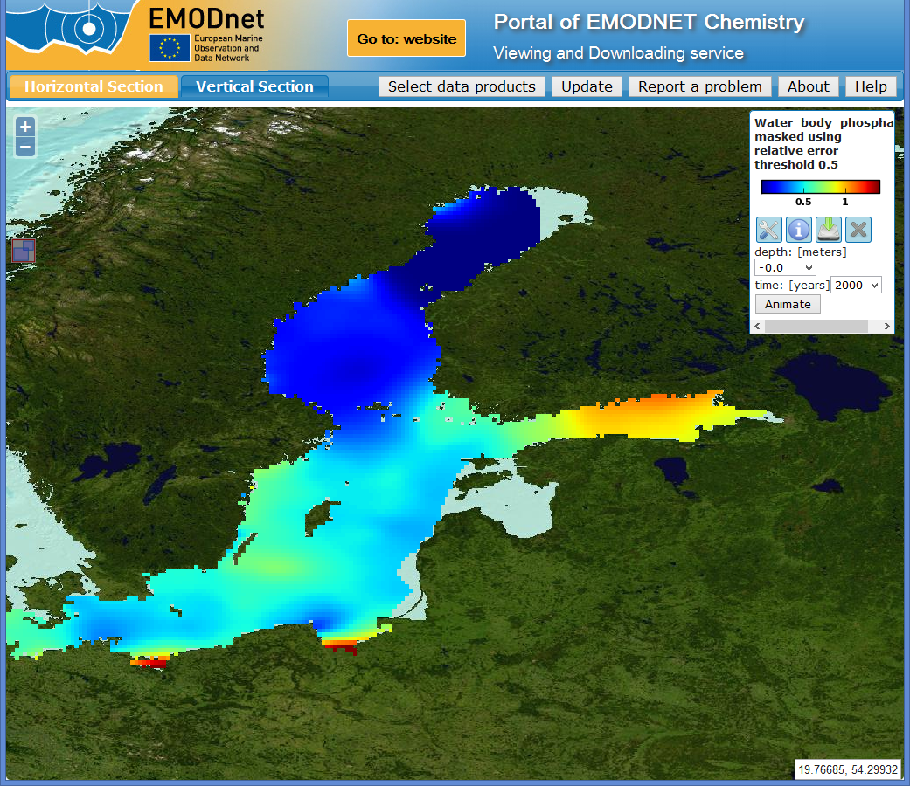 The right panel controls the current layer: * __Select depth and time__ * Plot style * Metadata * Download of data product --- # Vertical section 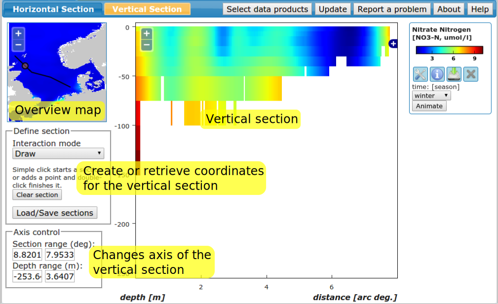 * User interface to generate vertical sections --- # Vertical section <video style="float:right" width="500" controls="controls" autoplay="autoplay" > <source src="Fig/OceanBrowserVerticalSection.webm" type="video/webm"> <source src="Fig/OceanBrowserVerticalSection.mp4" type="video/mp4"> </video> * Vertical section can be drawn with the mouse * Data product will be extracted along this section (x-axis: distance from starting point and y-axis depth) * Section coordinates can be saved (to visualize two parameters along exactly the same section) --- # Vertical section 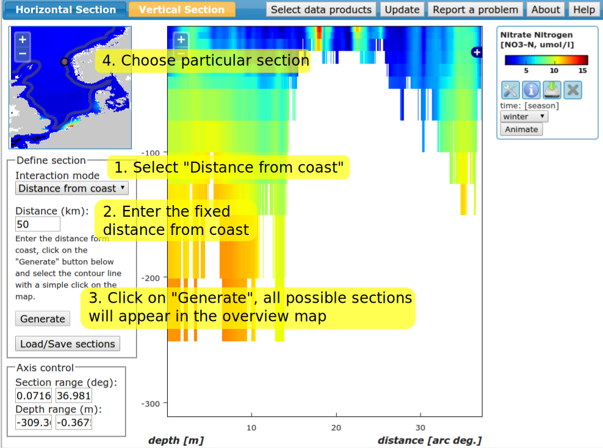 * The path of a vertical section can be generated automatically by: * fixed distance from coast * or fixed ocean depth --- # Download a data product 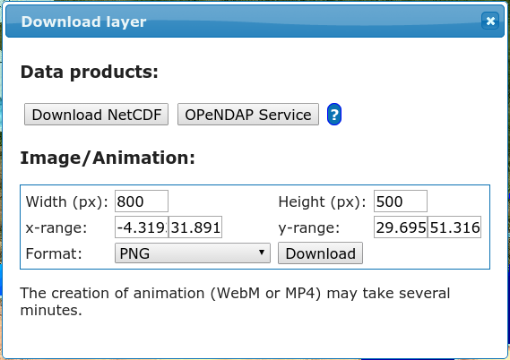 * Download icon (green arrow) * Data available as NetCDF or OPeNDAP * Image / Animation export --- # Export animations <video style="float:right" width="500" controls="controls" autoplay="autoplay" > <source src="Fig/phosphate_baltic_shadedrelief.webm" type="video/webm"> <source src="Fig/phosphate_baltic_shadedrelief.mp4" type="video/mp4"> </video> * Winter distribution of phosphate (produced by SMHI) * Centred 10-year average of all winter months * OceanBrowser: export of animation by choosing MP4 or WebM animation. --- # Speed optimization  * OceanBrowser implements __cache control headers__ * Significant __improvement of the responsiveness__ * Minimizing the risk to using an out-of-date content. * Web browser must __check with the server if a newer version exists__ * The server can: * confirm that the cached version is the current version (cache revalidation) * respond with a latest version of the corresponding request * Potential cache revalidation is fast because (only a comparison of the time-stamps) --- # Observation location  * Web Feature/ Processing Service by Deltares * Web Feature Service → List of all available parameters * Requirements * Data location (within depth and time range) * Color shows the number of observations * In the past: Web Feature Service → Location of every observation -- * However: * About 10000-100000 data points: __to much data for a web browser__ * Web Feature Service: only filtering, __no aggregation__ * Web Processing Service → Image with the observation location --- # Profile plots  * Plots can be changed dynamically * Varying parameters: depth, time and measured value * Profile (x: value, y: depth, color: time) --- # Time series plots  * time series (x: time, y: value, color: depth) --- # Time section  * "section" (x: time, y: depth, color: value) --- # List of all observations  * Observation in SeaDataNet and EMODNET Chemistry are identified by an: * EDMO code: institution * CDI (Common Data Index) identifier * For each plot: the list of all used observation included with a link to the central repository --- # Installation * The hard way: install 13 packages, configure Apache and OceanBrowser and set file permissions * The easy way: ```bash docker run -p 8080:80 --name my-oceanbrowser-container \ -v /some/netcdf/files/:/var/www/data:ro abarth/oceanbrowser ``` * Docker automatically downloads and runs OceanBrowser * OceanBrowser is available at port 8080 on localhost and servers files in the directory `/some/netcdf/files/` * Configuration using environment variables (public URL, name,...) * More info at the docker http://registry.hub.docker.com and search for OceanBrowser --- # Summary * DIVA adapted to the needs of EMODNET Chemistry, a.o. * Reduce the weight of __time series__ * __Analysis near the ocean floor__ * Cut the analysis spatially (useful when domains overlap) * Handle very large NetCDF files * OceanBrowser allows the visualization of gridded data sets: * along a __horizontal section__ (at given time and depth) * along a __vertical section__ (e.g. at a fixed distance from coast) * Download options: * Full __NetCDF file__ * Subset via __OPeNDAP__ * __Image__ export (PNG, EPS, SVG, ...) * __Animation__ export (webm, mp4) * Installation and __migration to CINECA__ simplified using docker * Using OGC standards (WMS, WFS and NetCDF) * __Density of observations__ (for a specified depth and time range) * time series, profile plots